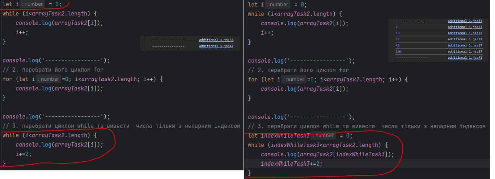

1) У останньому завданні з тасків де потрібно фільтрувати список users не міг зрозуміти як виконати завдання одним
циклом використовуючи тільки те що вивчили(тобто не використовуючи інформацію з майбутніх лекцій).
2) У додаткових завданнях (additional1.txt) рядки із завданнями 1 і 3. Використавши "let i=0;" для 1 while чому не
можна знову використати значення цього індексу для другого while (просто не виводило нічого в консоль, допоки не
зробив індекс з унікальним значенням перед 2 while).
